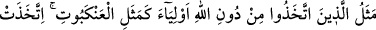
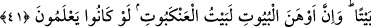
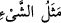

şöyle dedi: “Bu kıymetli zâtın bir katırı vardı, kırk yıl boyunca ona bindi de hayvan yine
katır olarak kaldı ve sonunda aynı hal üzere öldü.” Yâni onda insan olma kabiliyeti ve
özelliği olmadığı için kâmil bir zâtın ona binmiş olmasının bir tesiri olmadı (Onu
hayvanlıktan insan mertebesine çıkarmadı). Böylece ârif kişi, o iddiâcıyı susturdu.
Allah için ne de güzel söylemiş... Allah’tan niyâzımız odur ki, bizi nefis vatanından
çıkarıp mübârek katında ikâmet ettirsin...
41. Allah’tan başka dostlar edinenlerin durumu, örümceğin durumu gibidir.
Örümcek bir yuva edinir; halbuki yuvaların en çürüğü şüphesiz örümcek yuvasıdır.
Keşke bilselerdi!
“Allah’tan başka dostlar edinenlerin durumu,” kendisi için bir ev edinen
“örümceğin durumu gibidir.” Yani, zayıf olarak ördüğü evin hâli gibidir; hatta putların
hâli bu örümcek evinden de zayıftır. Çünkü örümcek evinin bir hakikat yönü ve az da
olsa bir faydası vardır. (Putların dostluğu ise tamamen mânâsız bir şeydir.)
el-Muhtâr’da kaydedildiğine göre, “__WORD__ ifâdesi, falan şeyin vasfı, temsili ve
tanımlanması anlamına gelir. “İttihâz” kelimesi ise “edinmek” mânâsına gelir. “Evliyâ
(Veliler)” ile kasdedilen müşriklerin taptıkları putlardır. Yani, müşriklerin bir güvence
ve dayanak olarak edindikleri putların şaşılacak yönü, vasfı ve tanıtımı demektir.
“Örümcek” kendisi için “bir yuva edinir; halbuki yuvaların” en zayıf ve “en
çürüğü şüphesiz örümcek yuvasıdır.” Böceklerin edindikleri evler arasında onunkinden
daha zayıf ev yoktur. Çünkü örümcek evinin ne temeli, ne duvarı ve ne de tavanı vardır,
sıcak ve soğuktan korumaz. Bu yüzden çok çabuk bozulur.
Dolayısıyla âyet, hâlin hâle benzetilmesi kabilindendir. Putları “veliler” edinen,
onlara tapan, onlardan fayda ve şefâat uman ve onlara itimâd eden ve güvenen kimsenin
hâli, bir ev edinen örümceğin hâline benzetilmiştir. Nitekim örümceğin evi, kendisinden
ne bir zararı veya faydayı, ne bir hayrı veya şerri ve ne de yağmuru veya ezâyı def eder,
savar. En hafif rüzgârla bile bozulur. İşte putlar da böyledir; tapanlara ne bir fayda ne
bir zarar ve ne de bir hayır veya şer verir.
Mesnevî’de der ki: Oymalı ve süslemeli ahşap ve taş önünde nice aptallar eğilir.
Kim serabı, şarab (su) zannederse, biraz sonra onun bir hayal olduğunu anlar. İşte kim
Allah’tan başka şeye dayanırsa, çalışması boşa çıkar, bir sonuç alamaz. Bu kimsenin
helâk oluşu, dayandığı nefsindedir. Kim Allah’tan başkasını yardımcı ve destek
edinirse, ismet yolunu (Allah’ın korumasını ve himâyesini) kendisinden kaldırmış,
sadece nefsinin kuvvet ve gücüne dönmüş olur.
Âyet-i kerîme Allah’ı dost edinenlerin, ona ibâdet edenlerin ve ona dayananların